Three very different clients, one approach. I build the key frames by hand and let AI do only what it does well: animate, extend and scale. The result looks crafted, not generated.
A Paris shoot every month for a jewelry feed. Hand-animated trailers for every new book. A crowd scene where two strangers mirror each other's steps. Each of these is real work for a production team. With AI and enough craft, it fits a normal content budget.
The rule I work byAI never decides the frame. Composition, details and transitions come from me; generation fills the motion in between.
The whole brand lives in a slightly retro European world: old-money interiors, soft daylight, silk and skin. Shooting that for real every month means locations, models, styling and a photographer. I build it with AI instead, simply and at a fraction of the cost.
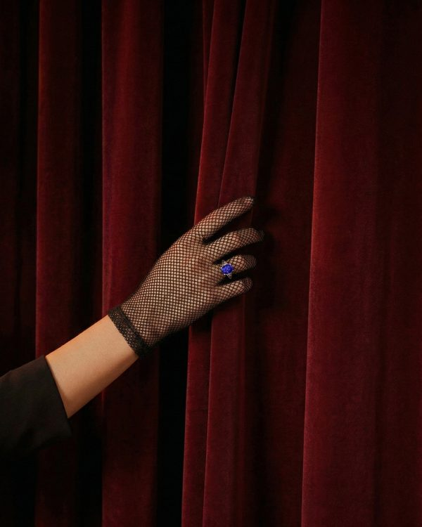
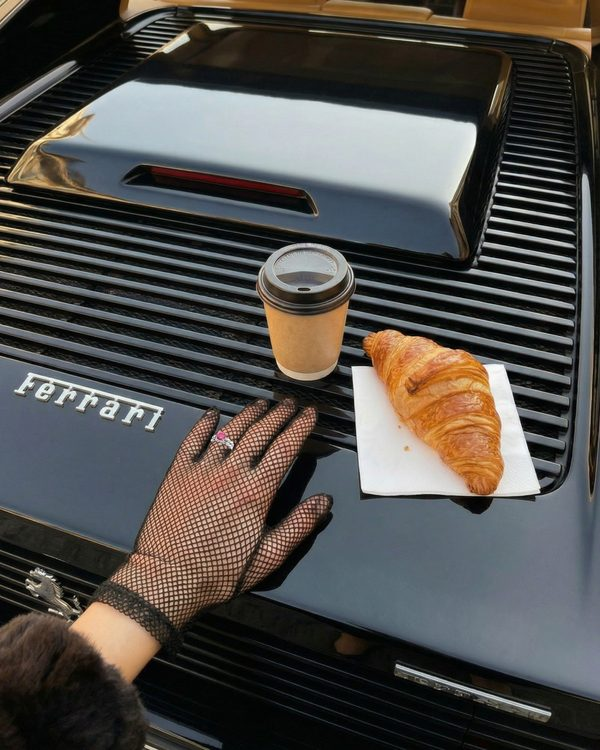
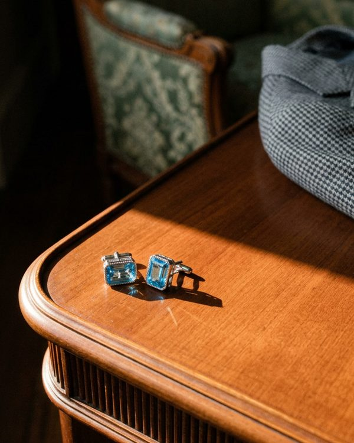
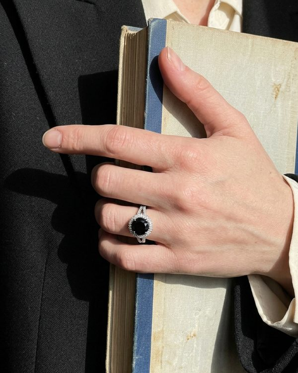
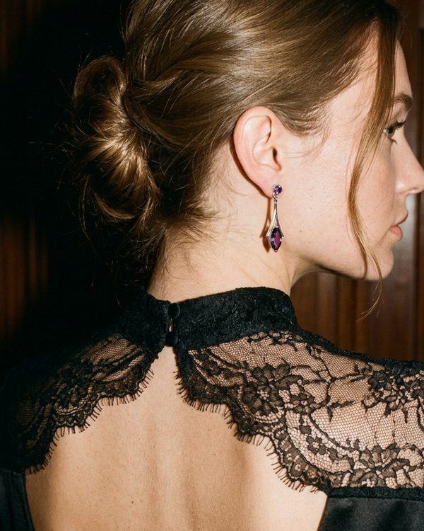
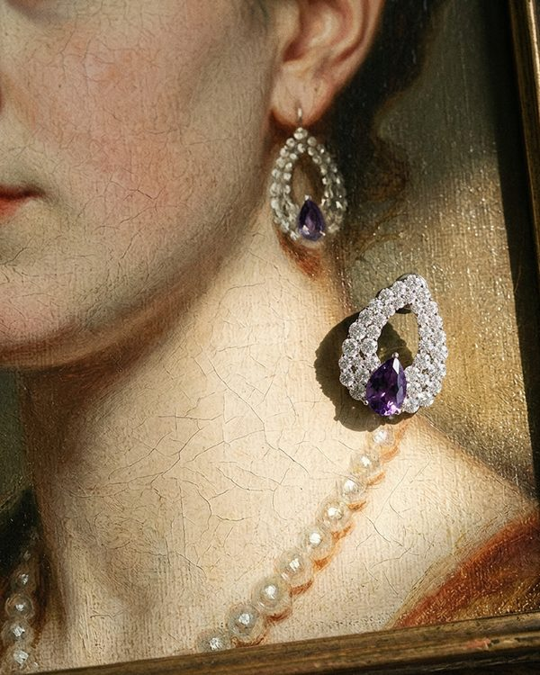
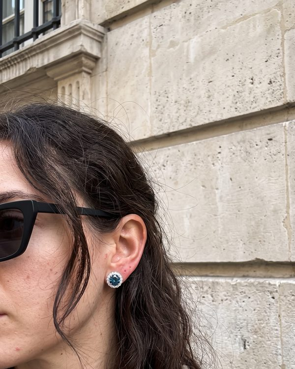
A centred subject is the first tell of a generated image. The jewel sits off-centre with generous empty space.
No "hyper-realistic". Skin is unretouched, hands are asymmetric, faces have character, clothes look worn.
Soft raking daylight shows texture and metal. Flat studio light is banned.
A major US publisher of romantasy and dark fantasy needed trailers, teasers, cover reveals and deluxe-edition showcases for each new release. The audience is book lovers who notice every detail of a cover. The videos had to feel like the book's own artwork come to life.
For marketersEvery frame starts from the publisher's real artwork. Nothing is invented by the model, so covers, edges and endpapers stay exact.
Teaser, jungle series. Eight key frames cut from the book's own illustrations: eyes in the dark, a hawk, a python, flowers. Seedance only moves between them.
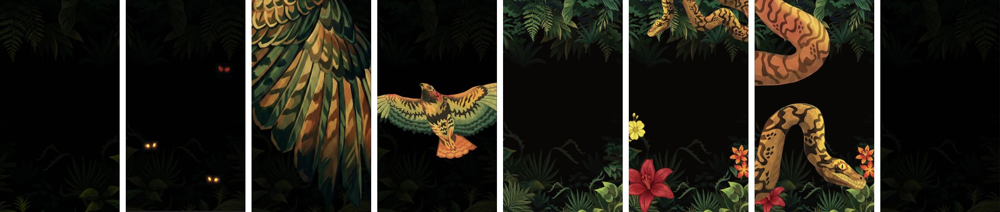
Teaser, lilac series. Snakes, a sword, a wing, a dragon: each object placed by hand in the same frame so the cuts feel like one illustration coming alive.
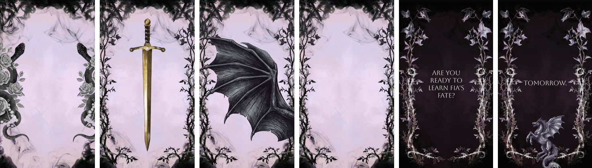
Trailer, sea series. Titles sit on calm frames; the ship and the lightning arrive between them.
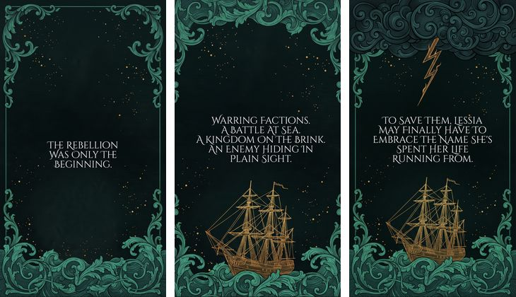
Storyboards scroll sideways. Each frame here is a still I built before any animation.
All book artwork, covers and titles belong to the publisher, the authors and their illustrators. I show this work only to describe my role in the project.
The videos go out as joint posts by the publisher and the authors. Here are six of them; it is only part of what I made for this client.
| Post | Likes | Comments | Reposts |
|---|---|---|---|
| Teaser, second book of a trilogy | 3,220 | · | · |
| Cover reveal, new trilogy | 2,663 | 94 | · |
| Deluxe edition announcement | 2,508 | 173 | 209 |
| Book trailer | 1,893 | 182 | 342 |
| Cover reveal, book in an animated frame | 1,640 | · | · |
| "Something big" teaser | 430 | · | · |
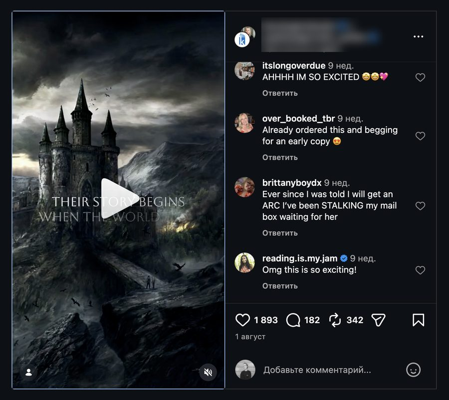
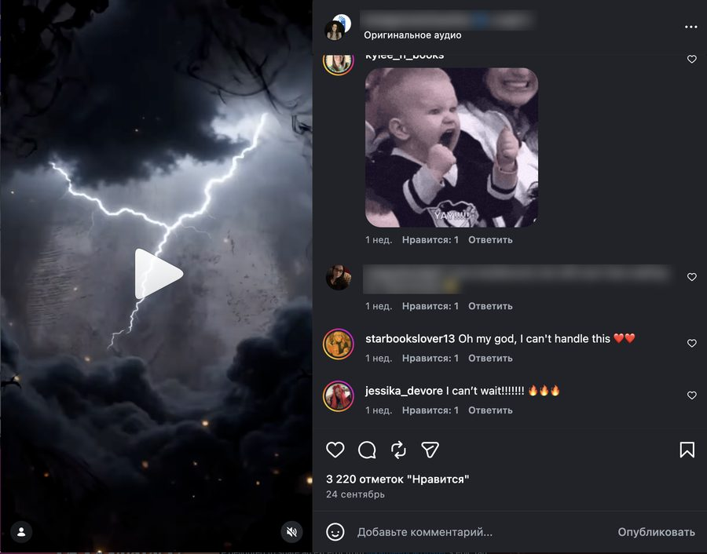
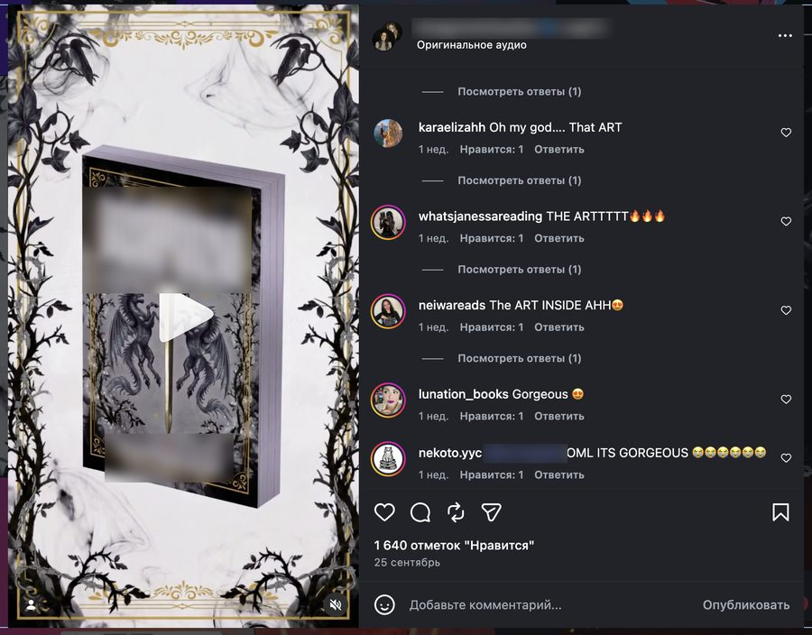
My client invented a word, "shuggle": when two people walk toward each other, step to the same side, then the other, trying to pass. He wanted short videos to bring the word into everyday language. It is hard to stage with real people and one of the hardest things to generate: two characters, perfectly mirrored steps, a busy street.
AI handles one character well. Two that react to each other step by step fall apart.
Scenes rebuilt again and again, kept only where the dodge reads instantly.
Every beat of the dodge is fixed as a still first, so the viewer sees exactly what happens.
Seven key frames, drawn before any animation. Two people walk in, meet, both step the same way, stop face to face, then pass. Each beat is fixed as a still so the dodge reads in one look.
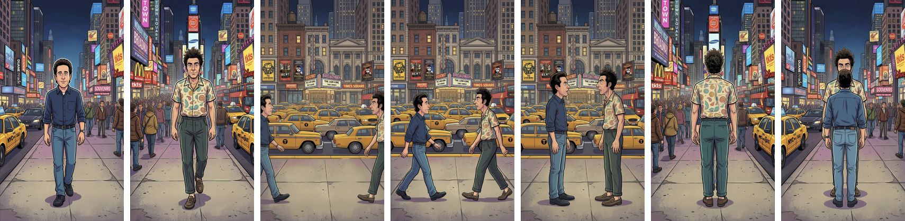
Also testedInstead of one prototype I suggested comparing formats: AI animation, edits of existing scenes and a real creator, so the client could see which one people react to.
For brands with a strong look, publishers and anyone whose idea is too costly or impossible to film. Monthly content or one launch.
Your references turned into rules and a prompt library.
Built by hand from your real assets.
Short clips, frame to frame, colour kept.
Text, holds, music and sound effects.
Posts and videos ready for your feed.